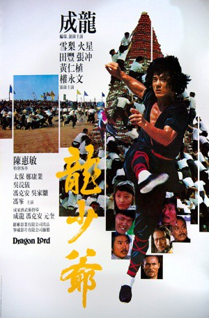

IMDB-Wertung: 6.6 / 10
IMDB-Wertung: 6.6 / 10  Metascore:
Metascore: 
The adventures of a restless martial arts student called Dragon, who, while constantly pursuing a girl, gets involved in the affairs of a gang of thieves.
Alternativ: Dragon Strike (Englischer Titel)
 IMDB-Wertung: 6.6 / 10 Metascore:
The adventures of a restless martial arts student called Dragon, who, while constantly pursuing a girl, gets involved in the affairs of a gang of thieves.
Jahr: 1982
Dauer: 103 Minuten
FSK: 16
Land: Hong-Kong Studio: Splendid FilmTonspuren:
Untertitel: Deutsch,
Auflösung: 1080p (1920x808) Größe: 7147 MB
Regisseur:  Jackie Chan
Jackie Chan
Drehbuch: Jackie Chan
Soundtrack:
Darsteller:
 Jackie Chan als Dragon
Jackie Chan als Dragon Mars als Cowboy
Mars als Cowboy Cam Clarke als Dragon's Father
Cam Clarke als Dragon's Father Jessica Gee-George als
Jessica Gee-George als  Jim Lau als
Jim Lau als  Hoi Mang als Lu Chen gang member
Hoi Mang als Lu Chen gang member Fred Tatasciore als
Fred Tatasciore als  Feng Tien als Dragon's Father
Feng Tien als Dragon's Father Eugenia Yuan als
Eugenia Yuan als  Kang-Yeh Cheng als Ah Dee
Kang-Yeh Cheng als Ah Dee Hark-On Fung als The Killer King
Hark-On Fung als The Killer King Pak-Kwong Ho als Spectator
Pak-Kwong Ho als Spectator Michael Sorich als
Michael Sorich als  Corey Yuen als Lu Chen gang member
Corey Yuen als Lu Chen gang memberDatei: X:\HD-Eastern-Collections\Jackie Chan\Blindwütige Drachenheld, Der (1982, FSK16, 1920x808).mkv seit 29.09.2017
Festplatte: HD Eastern+Western
 Es gibt insgesamt 58 Filme in der Gruppe 'HD-Eastern-Collections\Jackie Chan'
Es gibt insgesamt 58 Filme in der Gruppe 'HD-Eastern-Collections\Jackie Chan'